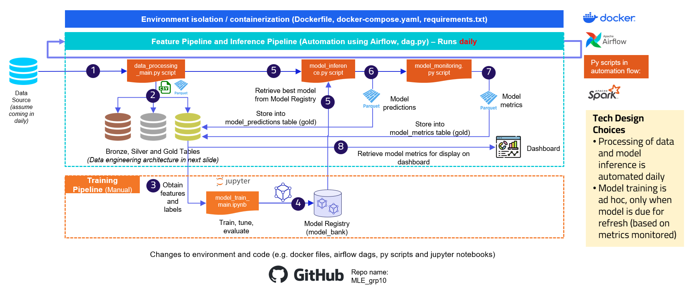

Role: Team member
Year: Jun 2025
Topics: Machine Learning Engineering, Medallion Architecture & Data Modeling, Model Monitoring, Data Pipeline Orchestration
Source: Github repository
About the Project
This is a group project for CS611 Machine Learning Engineering course.
In this project, we built a Machine Learning Pipeline which:
- processes raw data from Olist into a datamart following medallion architecture (bronze, silver, gold)
- makes daily inference to predict late orders and stores the predictions into the datamart
- computes monitoring metrics and stores the metrics into the datamart
- displays the monitoring metrics into a dashboard (Jupyter notebook)
The above processes are orchestrated using Airflow and containerised in Docker.
Model training is performed manually, and we create 2 models (XGBoost and Logistic Regression).
